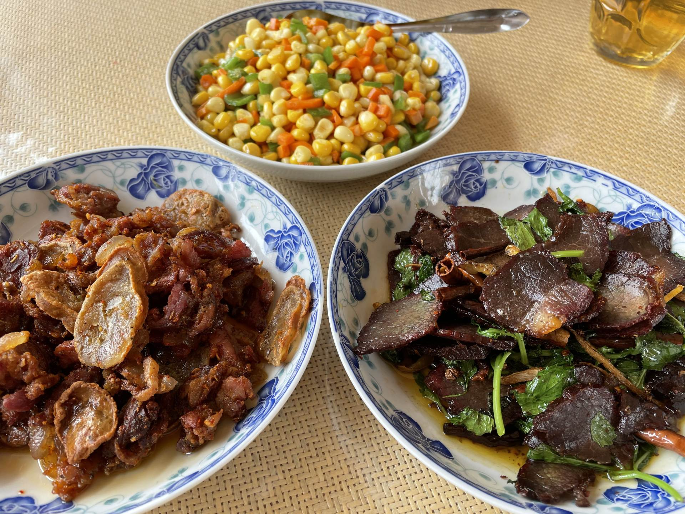

- Home
- Dashujiao Village and Elephants
- Progress of Coexistence Project
- Coexistence Worldwide
- Travel Guide
Pu 'er is mountainous and has a large forest cover area, so there are many edible plants in Pu 'er. In addition, different ethnic groups and regions have different tastes, so the ingredients are diverse, contributing to the uniqueness of Pu 'er Diet.
The specialties of Pu 'er Diet include rice noodles with pea soup, chicken tofu, Wa chicken rice, barbecued pork, glutinous rice cake, red tail fish, spiced beef, Chinese rice pudding, braised chicken, and so forth.

Local Food
Local Food

Local Food